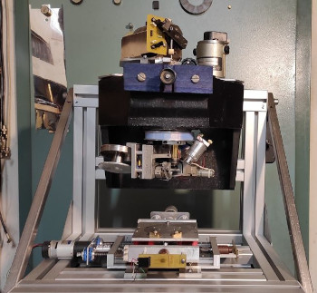

Mechanical description
[TODO]

We have already built the ultrasonic driver as we needed to test if the machine head was working at all when we bought it. As we’ll see afterwards, the ultrasonic element is a highly specialized part that has a fundamental role in the wedge bonding procedure. It would’ve made no sense to proceed further in the rebuild if this element was broken. Furthermore, the heating element is currently a WIP in another University of Udine lab project.
The current state of the machine is depicted in the image on the side. The 4-axial frame which supports the machine head was built from scratch, together with the motor mounts, the travel limiting sensors and the encoders’ mounts.
This website will act as a journal. We will guide you on our journey of the development of the motor control boards, the implementation of the control algorithms and the master system control board which will coordinate all operations.